PaperWeekly 第十五期
引言
NMT是热门研究领域之一，尤其是Google和百度都推出了自己的NMT翻译系统，在工业界、学术界和翻译界都引起了轩然大波，一时间对NMT技术的研究和讨论达到了顶峰。Attention模型在NLP中最早的使用正是在NMT领域出现的，包括横扫很多领域的seq2seq+attention解决方案，都是在NMT模型的基础上进行相应的一些小改动而成的。所以，本期PaperWeekly带大家看一看最近两年Attention模型在NMT领域中的研究进展，本文包括以下paper：
1、Neural Machine Translation by Jointly Learning to Align and Translate, 2015
2、Effective approaches to attention-based neural machine translation, 2015
3、Modeling Coverage for Neural Machine Translation, 2016
4、Agreement-based Joint Training for Bidirectional Attention-based Neural Machine Translation, 2016
5、Improving Attention Modeling with Implicit Distortion and Fertility for Machine Translation, 2016
Neural Machine Translation by Jointly Learning to Align and Translate
作者
Dzmitry Bahdanau, KyungHyun Cho and Yoshua Bengio
单位
Jacobs University Bremen, Germany
Universite ́ de Montre ́al
关键词
NMT, attention
文章来源
ICLR 2015
问题
这篇论文首次提出在NMT中使用attention的机制，可以使模型自动确定源句子中和目标词语最相关的部分，相比于基本的encoder-decoder方法提高了翻译效果。
模型
该论文使用的基本模型是一个双向RNN的encoder-decoder的结构。在这篇论文之前，encoder部分都是直接把输入句子encode成一个固定长度的上下文向量c，然后decoder再根据该向量来产生翻译。但是由于句子长度不定，这种做法对长句子的效果不理想。
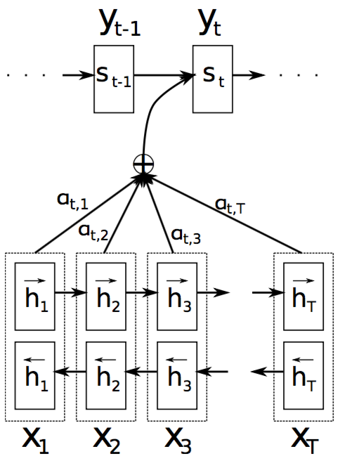
上图是这篇论文提出的模型结构，作者首次提出了在decoder中加入一种attention的机制。直观上理解，就是decoder可以决定更多地注意原句子中的某些部分，从而不必把原句子中的所有信息都encode成一个固定的向量。具体来讲，上下文向量ci由下式计算得出：
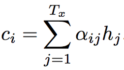
其中，
其中，
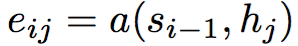
上式中的a便是alignment model，可以用来估计位置j附近的输入和位置i的输出之间的匹配程度。本论文中的alignment model是一个前馈神经网络，它和模型中的其它部分一起进行训练。
资源
1、英法翻译数据集 ACL WMT ’14
2、一个基本的RNN encoder-decoder模型的实现 GroundHog
相关工作
1、2013年，一个类似的aligning的方法被提出用于手写体生成。论文：Graves(2013) Generating sequences with recurrent neural networks
2、2014年，seq2seq的神经网络模型用于机器翻译。论文：Sutskever(2014) Sequence to sequence learning with neural networks
简评
本论文创新性地在NMT中提出了attention的机制，可以使模型在每一步注意到源句子中不同的部分，从而提高了NMT的效果，该效果的提升对于长句子的翻译尤其明显。
Effective approaches to attention-based neural machine translation
作者
Minh-Thang Luong, Hieu Pham, Christopher D. Manning
单位
Computer Science Department, Stanford University
关键词
NMT;Global Attention;Local Attention
文章来源
EMNLP 2015
问题
Attention机制引入极大提升了NMT的翻译质量，但对于Attention实现架构的讨论还很少，尤其是全局Attention的计算效率问题。本文就是讨论各种优化策略，包括Global Attention, Local Attention，Input-feeding方法等。
模型
Global Attenion，生成上下文向量c_t时，考虑原文编码过程中的所有隐状态。
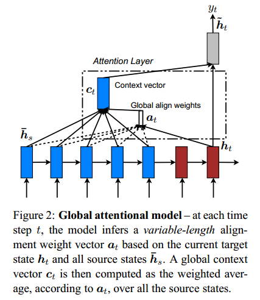
Local Attention，对于每个正在生成的译词，预测一个原文对齐的位置，只考虑该位置前后一个窗口范围内的原文编码隐状态。
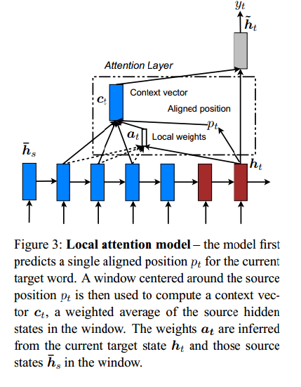
Input-feeding，用一个额外的向量，来记住哪些词是已经翻译过的，即考虑了coverage的问题。
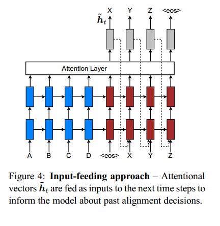
资源
1、训练数据：WMT14 (4.5M句对，116M 英文词，110M德文词)
2、开发集：newstest2013 (3000句)
3、测试集：newstest2014(2737句)和newstest2015(2169句)
4、代码和模型共享在：http://nlp.stanford.edu/projects/nmt/
相关工作
主要是follow了(Bahdanau et al., 2015; Jean et al., 2015)的工作，对Attention的机制进行了探讨和改进。
简评
English-German的实验结果，较不用attention的方法提升了5个多点BLEU，充分证明了attention的有效性。
实验结果的表格详细列出了各种改进方法带来的收益，跟进者不妨仔细看看（以及第5节的分析），可以很快了解各种折腾的方向。
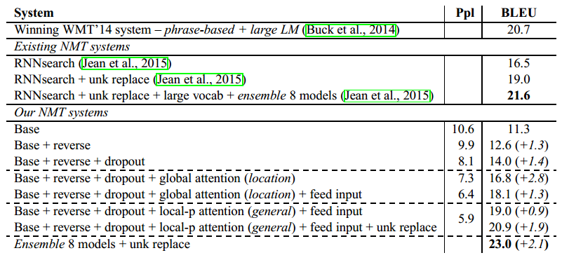
完成人信息
微博 @MyGod9，语智云帆创始人，机器翻译老兵，NMT追随者，weiyongpeng@lingosail.com
Modeling Coverage for Neural Machine Translation
作者
Zhaopeng Tu, Zhengdong Lu, Yang Liu, Xiaohua Liu, Hang Li
单位
诺亚方舟实验室，清华大学
关键词
NMT
文章来源
ACL2016
问题
解决经典神经机器翻译模型中存在的over-translation（过度翻译）和under-translation(翻译不足）的问题。
模型
在传统NMT模型中，加入统计机器翻译策略中的coverage方法，来追踪、判断原始句子是否被翻译，如下图、公式所示。
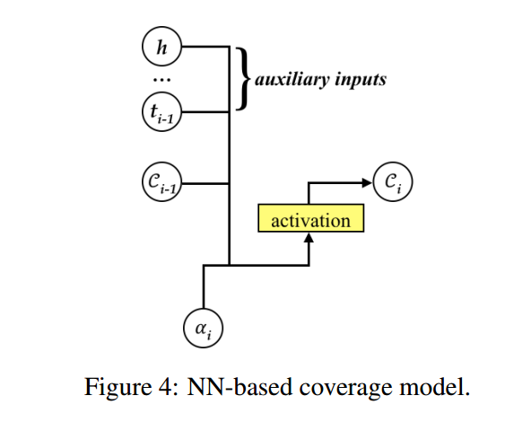
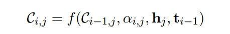
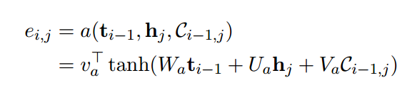
其中，C为新引入的coverage向量。
相关工作
前序文章：Neural Machine Translation by Jointly Learning to Align and Translate
简评
该文是基于Neural Machine Translation by Jointly Learning to Align and Translate之上的工作，引入了统计机器翻译中的Coverage方法来尝试避免NMT中的一些问题。根据文章的试验结果，这种方法能够提升翻译效果。由于写作此文时笔者未作实验，因此实际效果有待进一步衡量。
Agreement-based Joint Training for Bidirectional Attention-based Neural Machine Translation
作者
Yong Cheng, Shiqi Shen, Zhongjun He, Wei He, Hua Wu, Maosong Sun, Yang Liu
单位
Tsinghua University
关键词
Bidirectional NMT; Attention
文章来源
IJCAI 2016
问题
由于自然语言错综复杂的结构，单向的注意力模型只能引入注意力机制的部分regulization。文章提出了联合训练双向的注意力模型，尽可能使注意力在两个方向上保持一致。
模型
模型的中心思想就是对于相同的training data，使source-to-target和target-to-source两个模型在alignment matrices上保持一致。这样能够去掉一些注意力噪声，使注意力更加集中、准确。更确切地说，作者引入了一个新的目标函数：
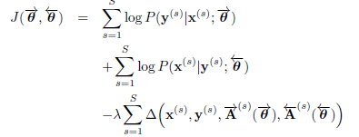
其中
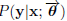表示source-to-target基于注意力的翻译模型，而 表示target-to-source的模型。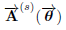表示对于句子s source-to-target的alignment matrix，而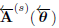表示target-to-source的。是损失函数，可以衡量两个alignment matrix之间的disagree程度。
表示target-to-source的模型。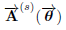表示对于句子s source-to-target的alignment matrix，而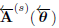表示target-to-source的。是损失函数，可以衡量两个alignment matrix之间的disagree程度。
对于,有几种不同的定义方法：
1、Square of addition(SOA)
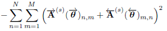
2、Square of subtraction(SOS)
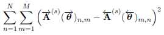
3、Multiplication(MUL)
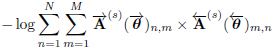
相关工作
作者文中说的是bidirectional translation的alignment matrices要一致；还有另外一篇文章“Agreement on Target-bidirectional Neural Machine Translation”是说decoding的时候可以正向或者反向产生目标句子，把这二者进行联合训练。另外，最近也有很多关于bidirectional training或者类似思想的文章，比如“Dual Learning for Machine Translation. Computation and Language”将reinforcement的概念引入了bidirectional training当中，“Neural Machine Translation with Reconstruction” 希望能从target hidden state恢复出source sentence
简评
这篇文章胜在idea,很巧妙地想到了让正反向的注意力一致来改进attention。
Improving Attention Modeling with Implicit Distortion and Fertility for Machine Translation
作者
Shi Feng, Shujie Liu, Nan Yang, Mu Li, Ming Zhou, Kenny Q.Zhu
单位
Shanghai Jiao Tong University, Microsoft Research
关键词
NMT, Attention, Fertility, Distortion
文章来源
COLING 2016
问题
使用attention机制解决NMT中调序和繁衍率的问题。
模型
模型非常简单，即在attention机制中将前一时刻的context vector c作为输入传入当前时刻attention中（命名为RecAtt）。如图：
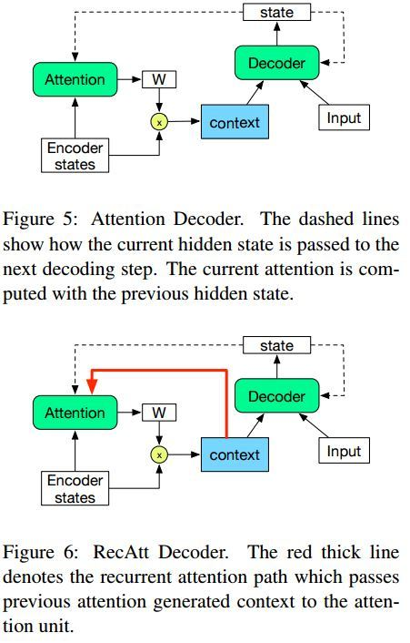
通过这样的RecAtt机制，attention部分的网络相当于记忆了之前时刻的context。
相关工作
ACL 2016李航老师组的工作 Modeling Coverage for Neural Machine Translation利用了attention机制来解决了NMT中“欠翻译”和“过翻译”的问题。
简评
该文章的创新之处在于提出将attention计算得到的context vector c作为attention的输入，这样就是的attention机制带有一种recurrent的意味。
总结
本期PaperWeekly精选了5篇Attention模型在NMT任务上的研究工作，Attention模型的发展不仅仅推动着NMT的进步，同时也可以借鉴于其他的任务中，比如QA，比如chatbot。感谢@MyGod9 @雨神 @susie-nmt @李争 @magic282 五位童鞋的辛勤付出。